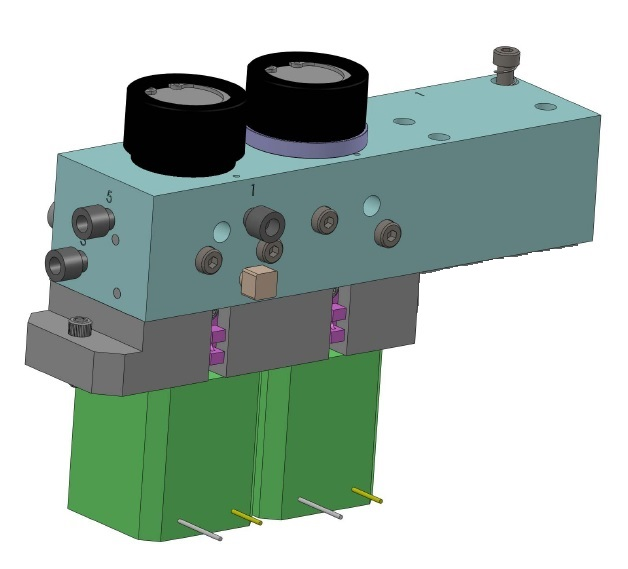
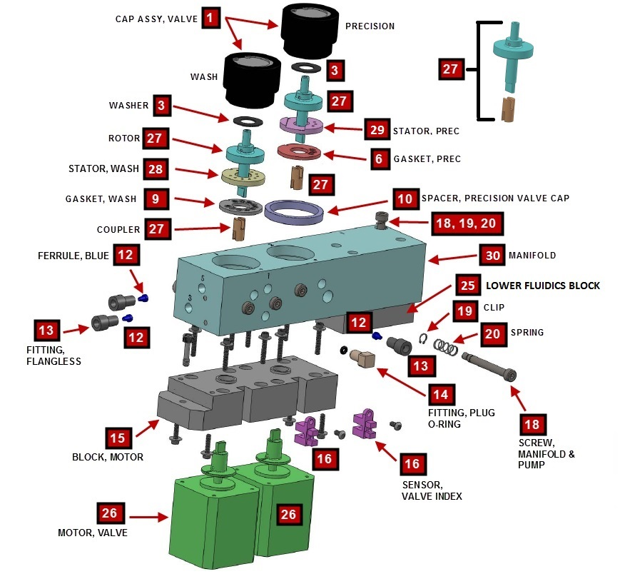
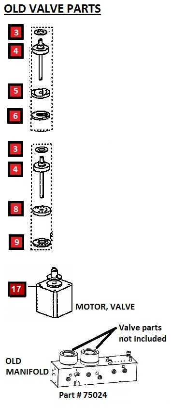
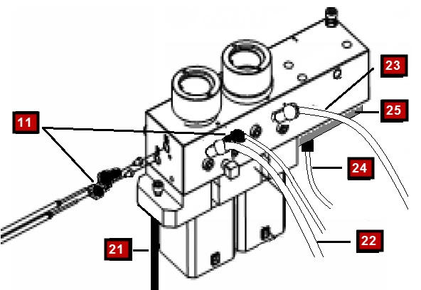
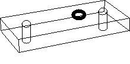
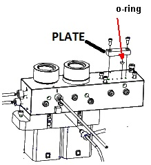
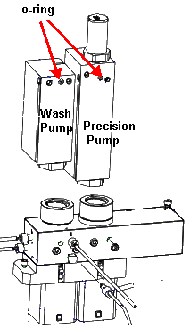
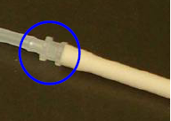

Fluidics Manifold and Valves
Illustrated Parts List
- Fittings
- Tubing
- Probes
- Pump Mount Screw
- Manifold Standoff
| Item | Order Number | Notes |
|---|---|---|
| Manifold, Fluidics, Clear, Assy (Boxed & Tested) | C10561 |
New style manifold (entire assembly). Includes the new rotor coupler design. Clear manifold that the precision and wash valves mount on. Includes all the valve parts (motors, rotors, stators, caps, and sensors), mounting hardware, and tubing. Replaces manifold assembly 77143. Also does not include the lower block (part# 81600078) that the wash buffer supply line screws in to. To convert the previous style manifold assembly to the newer manifold and rotor/coupler design, the following parts may be ordered and used to "rebuild" the manifold with the newer design:
 |
NEW Fluidics Manifold and Valves Parts Views



| Item | Description | Order Number | Notes |
|---|---|---|---|
| Not Labeled | MANIFOLD, ACCESS FLUIDICS ("Old" Style) | 75024 |
Acrylic fluidics manifold only, does not include hardware, valve components, or motors. Old style manifold. Not compatible with new rotor coupler design. For new manifold see item 30. |
| Not Labeled | PLATE, COVER | 77712 |
Block, Clear, Plastic, Termination, (Shunt) Fluidics. Covers unused ports on main fluidics manifold. Old style manifold only - new manifold does not require this piece.   |
| Not Labeled | FST, SEAL, O-RING | 77602 |
O-Ring , Pumps (Precision & Wash) to Manifold (MSQ=4)  |
| 1 | ASSY, VALVE CAP | A50007 |
Cap, Valve Assy (Precision or Wash) Replaces part 76142. Contains new thrust bearing (A16854) used on the DxI platform. Can be used with old and new manifolds. |
| 3 | WASHER, EDPM, VALVE | 79642 |
Washer, Rubber, Black, On Top of Ceramic Valve Rotor Same as Wash Valve. Can be used with old and new manifolds. |
| 4 | ASSY, ROTOR/SHAFT | 79263 |
Rotor, Valve - Wash, Waste and Precision (MSQ=1). FOR ONLY OLD MANIFOLD Same as Wash Valve. |
| 5 | STATOR, PRECISION VALVE | 75895 |
Stator, Valve, Precision (MSQ=1). FOR ONLY OLD MANIFOLD Do not install to Wash Valve. |
| 6 | SEAL, VALVE, PRECISION | 101091 |
Gasket, Rubber, Black, 3 hole, Seal, Precision Valve (MSQ=1) Do not install to Wash Valve. Can be used with old and new manifolds. |
| 8 | STATOR, WASH VALVE (MSQ=1) | 74255 |
Stator, Wash Valve, 10 Holes. FOR ONLY OLD MANIFOLD Do not install to Precision Valve. |
| 9 | Seal, Wash Pump, Molded | A51470 |
Gasket, Rubber, Black, 10 Hole, Wash Valve Do not install to Precision Valve. Can be used with old and new manifolds. |
| 10 | SPACER, CAP | 80042 |
Spacer, Cap, Precision Valve, Located Under Precision Valve Cap, Limits Cap Depth Only install on Precision Valve. |
| 11 | ASSY, TUBE, DISPENSE | 83003 |
Tube Assembly, Steel, Dispense Probe, Increased ID, Welded Barb, 7.5 " Includes metal tube, Ferrule, and Tubing Can be used with old and new manifolds. |
| Not Labeled | ASSY, PROBE DIS. SIDE PORT | 8299B |
Probe, Dispense, Side Port, Welded Barb ¼ TURN---SERVICE REPLACEMENT TO INSTRUMENTS WITH END DISPENSE PROBES Replaced by C69776 at stockout. |
| ASSY, PROBE, SIDE PORT | C69776 |
Probe, Dispense, Side Port, Welded Barb ¼ TURN---SERVICE REPLACEMENT TO INSTRUMENTS WITH END DISPENSE PROBES Replaces 8299B at stockout. Cut in serial number: 574311 and above. |
|
| Not Labeled | TUBING, TYGON, SURGICAL/HOSPITAL | A19014 |
Tubing, Clear, Aspirate/Dispense Probe to Barb Fitting Order By The Foot / Cut Into 1" Sections |
| Not Labeled | SIDE DISPENSE PROBE SERV KIT | 81600075 | Kit, Probe, Dispense, Side Port, Upgrade
This kit includes dispense probes, tubing, and connectors. |
| 12 | FST, FERRULE, 1/16" TUBING | 6062A | Ferrule, Tubing, Plastic, Blue, 1/16" OD (for Peri Pump, Sub. Probe, & Asp/Disp Tube Assy) |
| 13 | FITTING, FLANGELESS, SHORT | 79162 | Fitting, Ferrule Compression, Black, Peri Pump Manifold (Compresses Ferrules to Steel Tubes in Peri Manifold & Asp/Disp Tube Assemblies) |
| 14 | FST, FTG, PLUG, 1/4-28 | 5443A |
Fitting, Plug, Black, 1/4" - 28 (Plugs Substrate Bulkhead Port or Plugging Waste Valves & Pumps) Used on New instruments for shipping & for returning used waste valves or pumps. |
| 15 | MOUNTING BLOCK, VALVE MOTOR | 75633 | Block, Black, Plastic, Motor Mounting, Wash & Precision Valve |
| 16 | ASSY, VALVE HOME SENSOR ROHS | 7877A |
Sensor, Home, Wash or Precision Valve (MSQ=1) ROHS Same sensor for both Precision and Wash Valves. |
| 17 | WSH VAL MOT ASSY TERM ROHS | 75803 |
Motor, Valve, Wash / Precision, Assy (With Metal Drive Coupler) ROHS. OLD MANIFOLD Not compatible with new valve parts. Same motor for both Precision and Wash Valves. |
| 18 | SCREW, SOC HD, SHLDR, MOD | 76743 | Screw, Pump Mounting to Fluidics Manifold |
| 19 | FST, RETAINING RING, .188 | 76882 | Retainer, E-ring, .188" ID (Holds Wash & Precision Pump Mounting Screws in Manifold) |
| 20 | FST,SPRING,COMPRESSION | 49-007689-2 |
Spring, Metal, Retaining, Secures The Captive Pump Mounting Screws Holds mounting screws for Wash and Precision Pumps |
| 21 | STANDOFF, 4.5" | 77732 | Standoff, Metal, Round, Main Fluidics Manifold, 4.5" Long
Holds on the Main Fluidics Manifold. |
| 22 | TUBE ASSY, SF11 | 5542C | Tubing, Clear, Wash Tower to Wash Valve (Vacuum Valve) |
| 23 | Tube, Obstruction Detection | 02-012541-1 | Connects pressure sensor to precision pump manifold. |
| TUBE ASSEMBLY 16 INCH | 8811B |
Tubing, Clear, 16", Main Manifold to Pipettor Supply Tubing. Old style tubing for instruments without obstruction/pressure hardware. |
|
| 24 | TUBING,.125 IDX.187 OD | A53635 |
Tubing, Clear, 1/8" x 3/16", Order in Multiples of 1 Foot Quantities FLUIDICS MANIFOLD TO BULKHEAD TUBING ADAPTOR. WASH TOWER TO VACUUM BOTTLE T FITTING. PERI PUMP LEFT SIDE TO VACUUM BOTTLE T FITTING. VACUUM BOTTLE TO VACUUM PUMP T-FITTING. |
| Not Labeled | FST, FERRULE, 3/16 | 7212A |
Ferrule, Tubing, Plastic, 3/16" OD, Blue Vacuum Bottle Cap and Fluidics Manifold Buffer intake |
| Not Labeled | FST, FERRULE NUT, 3/16 | 7213A |
Fitting, Tubing, Plastic, 3/16" OD Vacuum Bottle Cap and Fluidics Manifold Buffer intake |
| Not shown | Connector, Tube | A15341 |
Replaced by D03211 at stock out. Fitting, Barb to Barb, Connects the opaque tubing from the buffer line to the clear tubing that goes to the valve manifold.  |
| Connector, 1/8 ID Tube | D03211 |
Replaces A15341 at stock out. Fitting, Barb to Barb, Connects the opaque tubing from the buffer line to the clear tubing that goes to the valve manifold. |
|
| 25 | Lower Fluidics Block | 81600078 | The lower block that the wash buffer supply line screws in to. |
| Not Shown | FST, SEAL, O-RING | 77532 | O-Ring, Sealing, Lower Fluidics Block to Fluidics Manifold |
| 26 | Wash/Prec Valve Motor Assy | C08385 |
Motor, Valve, Wash / Precision, Assy (With Metal Drive Coupler) ROHS. Same motor for both Precision and Wash Valves. FOR ONLY NEW MANIFOLD |
| 27 | F/S Kit, Valve Rotor & Coupler | C18015 | Both Rotor and Coupler are included in this kits.
- This kit can be used with both wash and precision valves. - FOR ONLY NEW MANIFOLD |
| 28 | STATOR, WASH VALVE | A16121 | FOR ONLY NEW MANIFOLD |
| 29 | Stator, Valve, Precision | 101072 | FOR ONLY NEW MANIFOLD |
| 30 | MAIN VLV MANIFOLD, A2 ("New" Style) | C08133 |
Acrylic fluidics manifold only, does not include hardware, valve components, or motors. New style manifold. Not compatible with previous rotor coupler design. If replacing previous manifold design, the following additional parts must also be ordered for replacement:
|
Edit Log
- 07/18/2016 THX - New format release.
- 8/30/2017 AJP - added fluidics manifold part number (manifold only).
- 11/15/2017 TEM - Added new manifold and valve parts.
- 4/2/2019 AJP - added new manifold part number (manifold only) and updated details regarding how to convert previous style manifold.
- 8/9/2019 THX - removed notes regarding cost on part# C10561.
- 9/13/2022 THX - removed obsolete valve kits: 81103 and 81114.
- 9/16/2022 THX - added obstruction tubing to item 23.
- 4/17/2023 THX - added C69776 dispense probe.
- 8/10/2023 DJP - changed 76892 to 49-007689-2 and added fitting (D03211).
- 8/28/2025 DJP - Use "Order Number" heading.